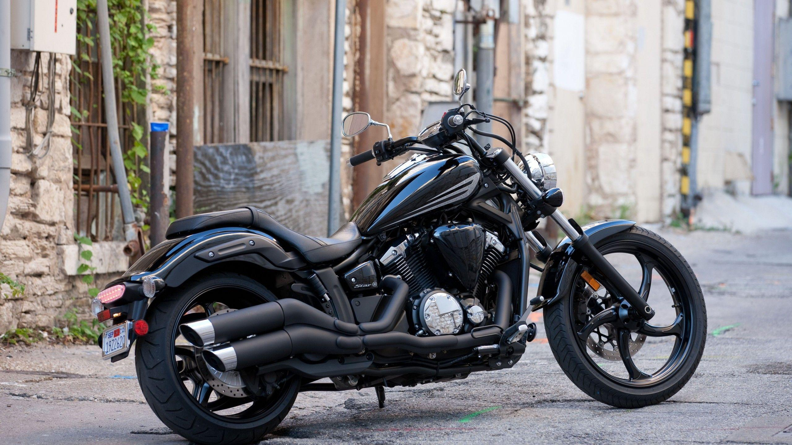

Feel the thrill on two wheels – compare bikes built for speed and adventure.
A motorcycle (or motorbike) is a vehicle used to transport people from one place to another. It does not have 4 wheels like a car. It has 2 wheels like a bicycle, and it has a motor like a car. A motorcycle is usually driven by one person. A passenger can also ride on the back of the motorcycle. Some motorcycles have a sidecar that can carry another passenger. On-road bikes (ones that are allowed on public roads) require the rider to have a special type of driver's license to be ridden legally. Off-road bikes are not allowed to be driven on public roads. Speed and stunts are the main goals for off-road bike sports. Many on-road bikes are much faster than off-road bikes and can be used in sports such as motorbike racing. Motocross is a form of motorcycle racing. It is on an off-road circuit. The sport came from motorcycle trials competitions held in the United Kingdom. Since motorcycles are lighter than almost all cars, they can accelerate more quickly. But it also makes them not as safe as cars, because they do not have a protecting chassis around them like cars. Very often motorcycle riders are injured heavily in accidents. Motorcycle riders should wear a helmet and other protective clothing like shoes and gloves, of which some have armor. This special clothing may reduce the rider's injuries in an accident. Motorcycles also do not protect riders against wind and rain. That makes it difficult to drive in winter or during bad weather. In poor countries, motorcycles are used by many as a cheap method of transportation. Many people who do not have the money to buy a car can afford a small motorcycle. In rich countries, large powerful motorcycles are used more as a hobby or sport.
An adventure bike is a versatile motorcycle designed for both on-road and off-road travel. It features a tall stance, long-travel suspension, and a comfortable upright riding position, making it ideal for long journeys and rough terrain. These bikes often come with large fuel tanks, rugged frames, and advanced tech like ABS and traction control. Popular models include the BMW GS, KTM Adventure, and Honda Africa Twin.
A bobber bike is a custom-style motorcycle known for its minimalist and stripped-down design. Typically featuring a low-slung seat, chopped fenders, and a clean, simple frame, bobbers focus on style and individuality. They often have a retro or vintage look, with wide handlebars, exposed metal parts, and solo seats. Built for cruising rather than speed or off-road use, bobber bikes are popular among riders who value classic aesthetics and a laid-back riding experience.
A Cafe Racer is a style of motorcycle that originated in the UK in the 1950s and 1960s. These bikes were built by motorcycle enthusiasts who wanted a fast, minimalist machine for short, quick rides – often from one café to another, hence the name.
A Cruiser bike is a type of motorcycle designed for comfortable, relaxed long-distance riding. These bikes typically have a laid-back riding posture, low seat height, and a distinctive classic look — often associated with brands like Harley-Davidson, Indian, and Royal Enfield.
A sports bike (or sportbike) is a high-performance motorcycle designed primarily for speed, acceleration, handling, and braking. It’s built for agility and performance rather than comfort, and often resembles racing motorcycles in design.
| Feature | Adventure Bike | Bobber Bike | Café Racer | Cruiser Bike | Sports Bike |
|---|---|---|---|---|---|
| Purpose | Touring + off-road | Stylish urban cruising | Short, fast urban rides | Long-distance highway comfort | High-speed performance |
| Riding Position | Upright, commanding | Relaxed, feet-forward | Aggressive, leaned forward | Relaxed, upright or reclined | Very aggressive, tucked-in |
| Styling | Tall, rugged, with mounts | Minimalist, solo seat | Vintage racing look | Classic retro, often chrome | Aerodynamic, sporty |
| Suspension & Build | Long-travel, high clearance | Lower suspension, simple frame | Lightweight, rearsets, clip-ons | Soft suspension for comfort | Stiff suspension for handling |
| Tires & Terrain | Dual-purpose/off-road tires | Street tires for city | Performance road tires | Fat road-oriented tires | Wide, sport compound tires |